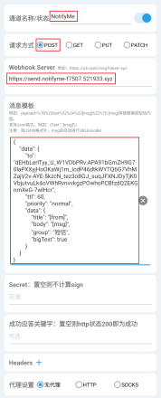
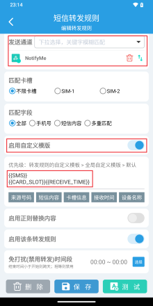
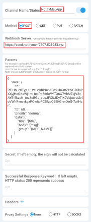
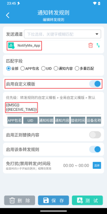
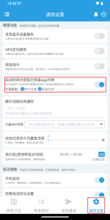
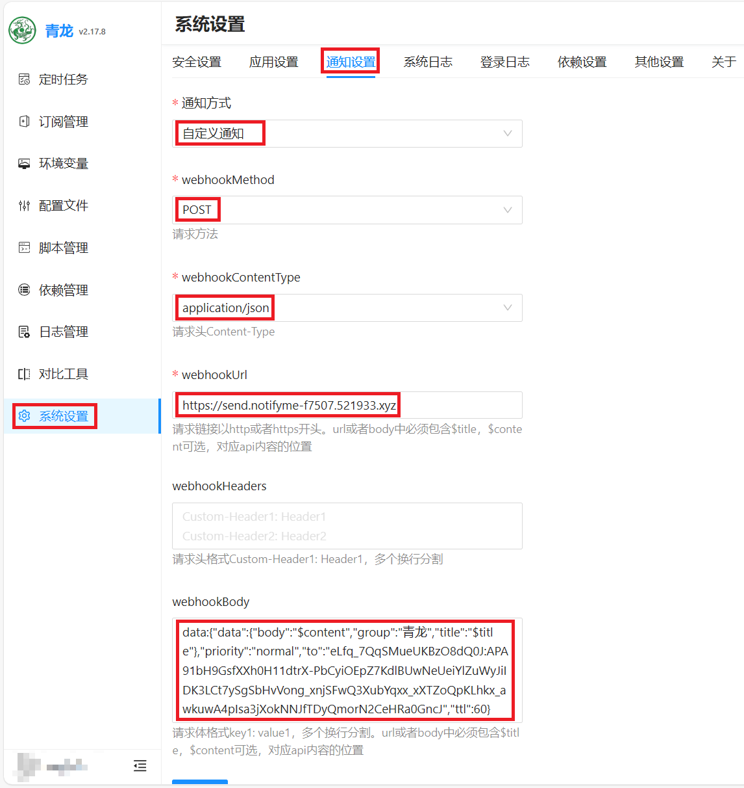

应用场景
短信转发器
Github：https://github.com/pppscn/SmsForwarder
-
创建发送通道：选择
Webhook创建发送通道。 -
请求方式：
POST -
Webhook Server：
https://notifyme-server.521933.xyz -
将下文消息模板（根据短信转发或应用通知转发选择具体消息模板）中
uuid的值，替换为 NotifyMe-设置/分享UUID 中复制的UUID。 -
消息模板中各项的定义及设置小图标、通知点击动作等参见进阶使用。
短信转发
- 消息模板
{
"data": {
"uuid": "CWYMVYWQHoPGXEkh9yP5Nd",
"ttl": 86400,
"priority": "normal",
"data": {
"title": "[from]",
"body": "[msg]",
"group": "短信",
"bigText": true
}
}
}
- 通知通道及转发规则创建


应用通知转发
-
导入应用图标。具体参见使用“Android 通知图标规范适配计划”图标库。
-
消息模板
{
"data": {
"uuid": "CWYMVYWQHoPGXEkh9yP5Nd",
"ttl": 86400,
"priority": "normal",
"data": {
"title": "[title]",
"body": "[msg]",
"group": "{{APP_NAME}}",
"iconType": 8,
"smallIcon": "[from]"
}
}
}
- 通知通道及转发规则创建



青龙
Github：https://github.com/whyour/qinglong
进入 系统设置/通知设置 进行通知设置：
-
通知方式：选择
自定义通知 -
webhookMethod：选择
POST -
webhookContentType：选择
application/json -
webhookUrl：
https://notifyme-server.521933.xyz -
webhookBody：
将uuid后面引号内的内容替换为NotifyMe中复制的UUID（NotifyMe-设置/分享UUID）。
data:{"data":{"body":"$content","group":"青龙","title":"$title"},"priority":"normal","to":"CWYMVYWQHoPGXEkh9yP5Nd","ttl":86400}
- webhookBody 中各项的定义及设置小图标、通知点击动作等参见进阶使用。

Quicker
Quicker下载地址：https://getquicker.net